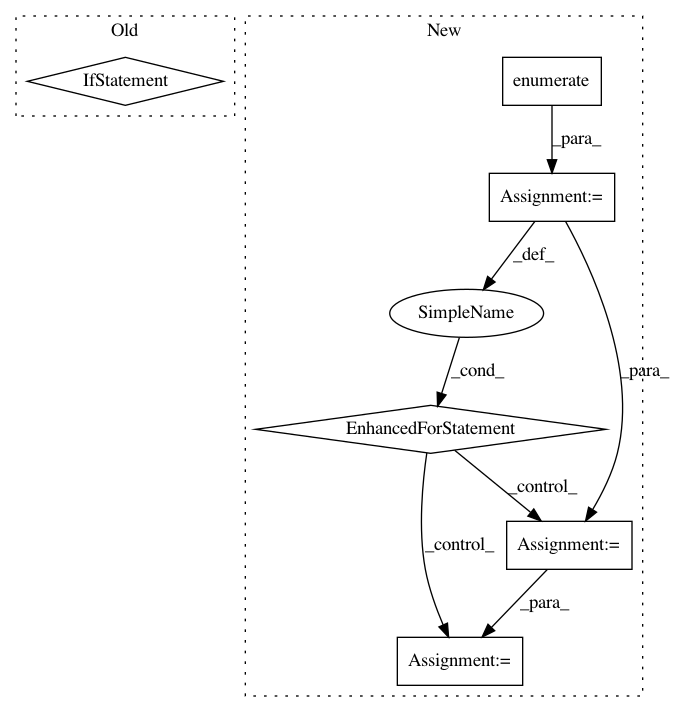

c8b28432a637a780eed96547260722ff3dede57e,niftynet/engine/sampler_selective.py,,rand_choice_coordinates,#Any#Any#Any#Any#Any#Any#,350
Before Change
print("Probability weighting considered")
proba = []
for (c, p) in zip(candidates.flatten(), mean_counts_size.flatten()):
if c >= 1:
proba.append(p)
print(len(list_indices), len(proba))
list_indices_fin = np.random.choice(list_indices, n_samples,
replace=False, p=proba)
else:
After Change
max_coords = np.zeros((n_samples, N_SPATIAL), dtype=np.int32)
half_win = np.floor(np.asarray(win_sizes["image"]) / 2).astype(np.int)
for (i_sample, ind) in enumerate(list_indices_fin):
indices_to_add = candidates_indices[ind]
max_coords[i_sample, :N_SPATIAL] = \
indices_to_add[:N_SPATIAL] - half_win[:N_SPATIAL]
// adjust max spatial coordinates based on each spatial window size
all_coordinates = {}
for mod in list(win_sizes):
win_size = win_sizes[mod][:N_SPATIAL]
half_win_diff = np.floor((max_spatial_win - win_size) / 2.0)
In pattern: SUPERPATTERN
Frequency: 4
Non-data size: 6
Instances
Project Name: NifTK/NiftyNet
Commit Name: c8b28432a637a780eed96547260722ff3dede57e
Time: 2017-10-04
Author: wenqi.li@ucl.ac.uk
File Name: niftynet/engine/sampler_selective.py
Class Name:
Method Name: rand_choice_coordinates
Project Name: dmlc/gluon-nlp
Commit Name: f19ace982075ea009af81f5e9f687cc2276f50ea
Time: 2020-01-20
Author: 50716238+MoisesHer@users.noreply.github.com
File Name: scripts/bert/fp16_utils.py
Class Name:
Method Name: grad_global_norm
Project Name: keras-team/keras
Commit Name: c4c4fac1aed6ccc84d2f21028ebdfd03213709aa
Time: 2016-11-15
Author: francois.chollet@gmail.com
File Name: keras/engine/topology.py
Class Name: Container
Method Name: updates
Project Name: ClimbsRocks/auto_ml
Commit Name: 5406774989ecbc6ccb528ac1b1db25575448bda0
Time: 2017-05-16
Author: ClimbsBytes@gmail.com
File Name: auto_ml/predictor.py
Class Name: Predictor
Method Name: score_uncertainty